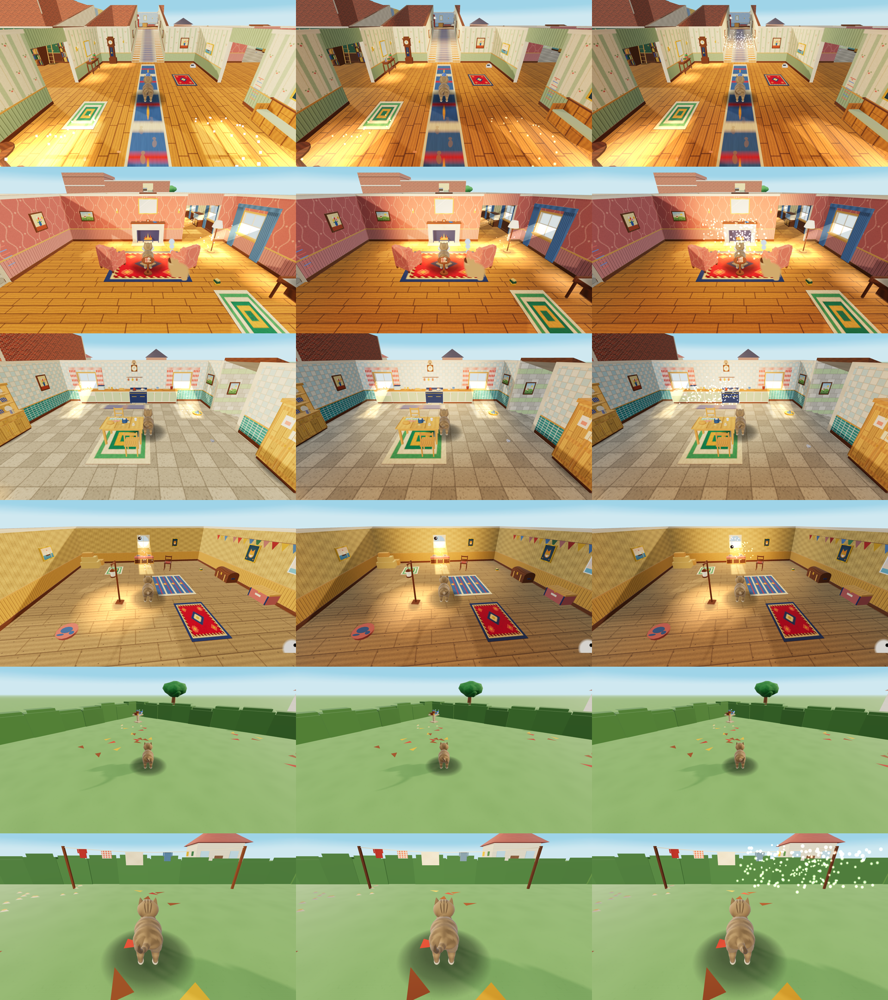

One row per vista: hall up the stairs, parlour hearth, kitchen range, attic window, birdbath, washing line. Columns: before (main), after, after with the golden moment (3+ s still: motes gather at the focal point). Same play camera, 1280x720 (page verify-oldhouse-beauty.html, shots v-*, warp=3 for the last column).

Honest read: indoors the change is clear but moderate: the foreground floor and side walls are dimmer and warmer or cooler, the hot window glare on the hall floor is tamed, the hearth, range and window get a warm rim, and the motes are soft round glints. The garden rows barely change except for the golden moment, because the lawn and hedge are not on the house's shader; the golden sparkle there pulls the house's motes across to the birdbath and washing line and reads as a loose cloud. Foreground framing by recolouring or scaling meshes was not done.